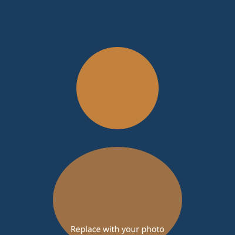

Data Science student at Northeastern University, passionate about turning data into stories.

Hi there! My name is Alex Chen, and I am a junior at Northeastern University studying Data Science with a minor in Mathematics. I grew up in the suburbs of Boston, Massachusetts, and have always been fascinated by numbers, patterns, and the hidden structures behind everyday things. When I was in high school, I stumbled upon a data visualization project that mapped the spread of misinformation on social media, and from that moment on I knew I wanted to work with data professionally.
At Northeastern, I have had the opportunity to take courses in machine learning, statistical modeling, database design, and information visualization. My favorite class so far has been DS4200 — Information Presentation and Visualization — because it blends technical programming skills with design thinking. I believe the most powerful analysis in the world is useless if it cannot be communicated clearly, and visualization is the bridge between raw numbers and human understanding.
Outside of academics, I completed a co-op at a healthcare analytics startup where I built dashboards in Python and Tableau to help clinical teams monitor patient outcomes in real time. That experience showed me how data science can have a direct, positive impact on people's lives. I am currently working on a capstone project that uses natural language processing to analyze public sentiment around urban development proposals in the city of Boston. When I am not coding, you can find me hiking in the Blue Hills, experimenting with pour-over coffee, or playing pick-up basketball at Marino Center.